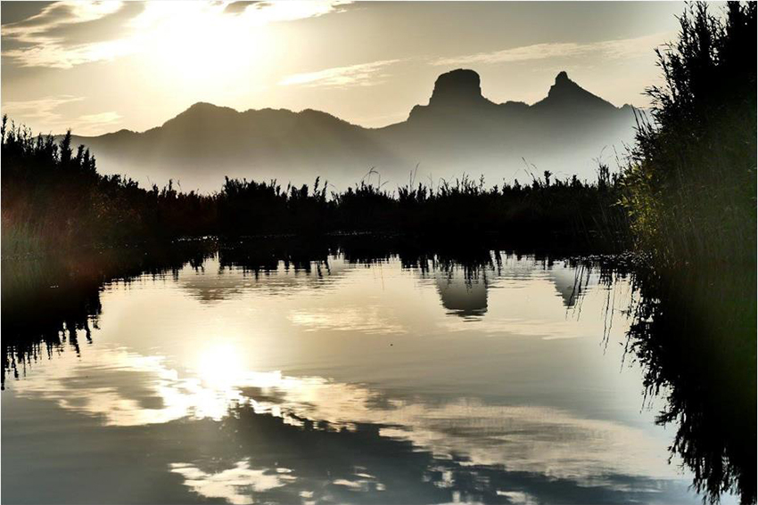
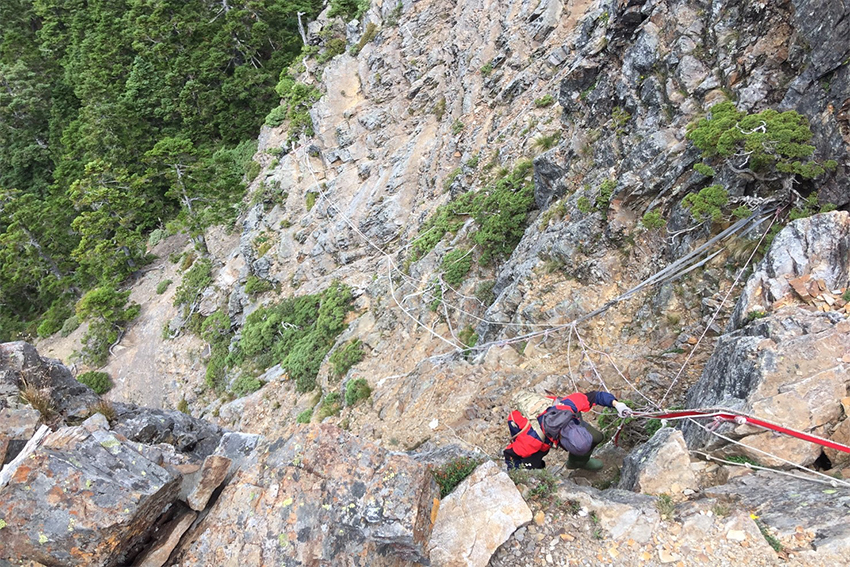
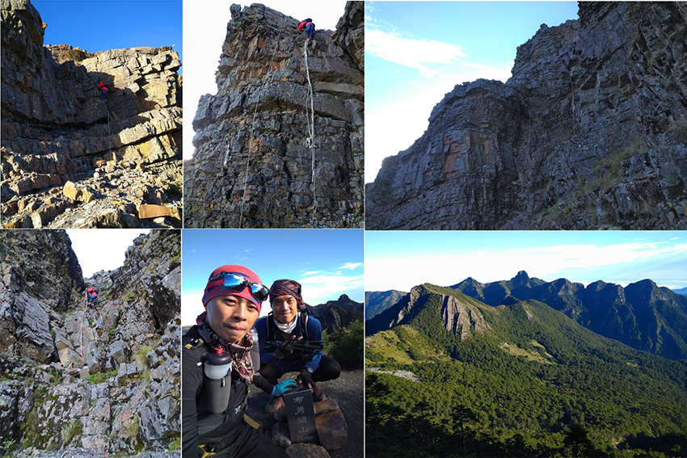
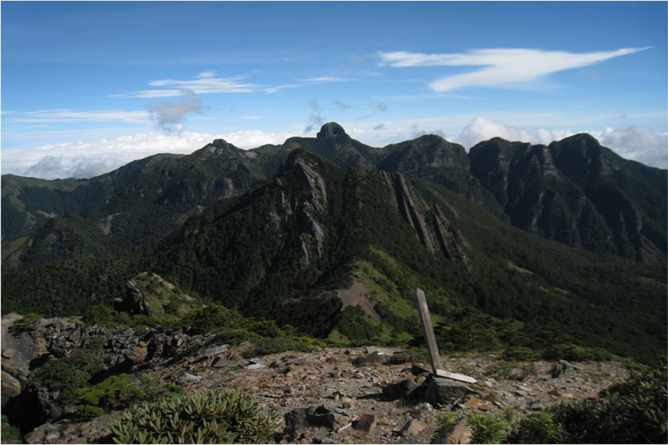
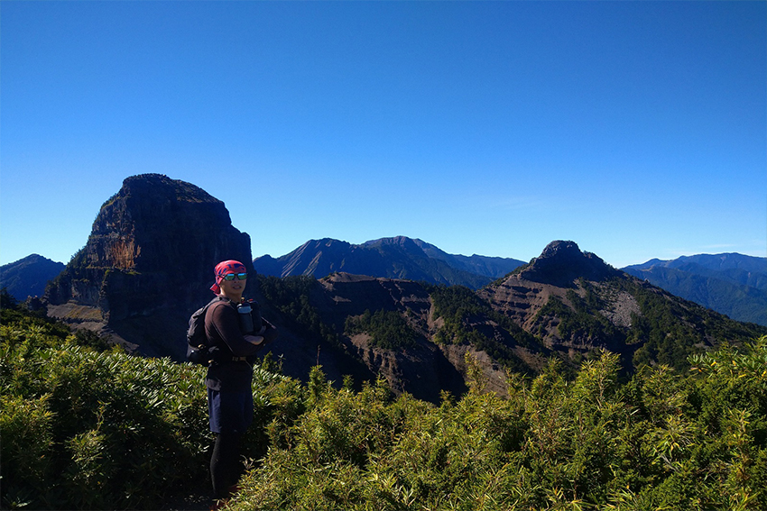
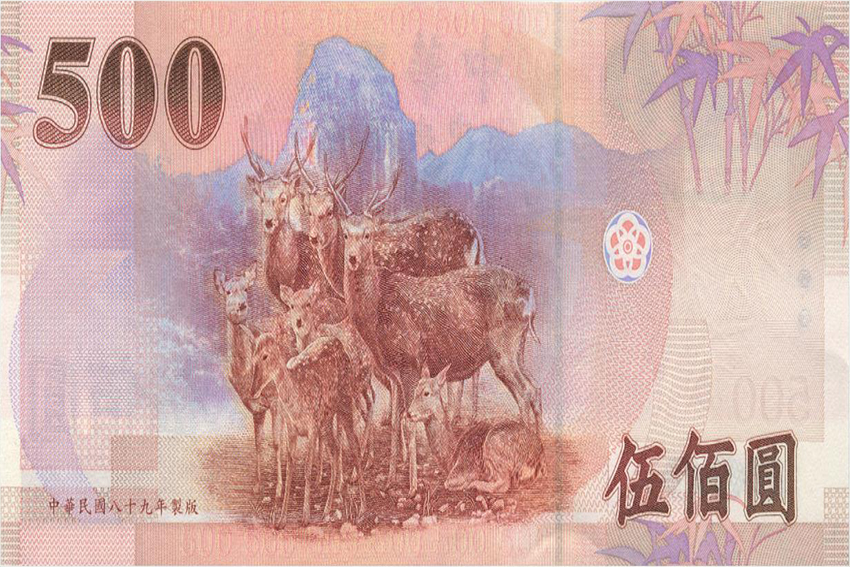
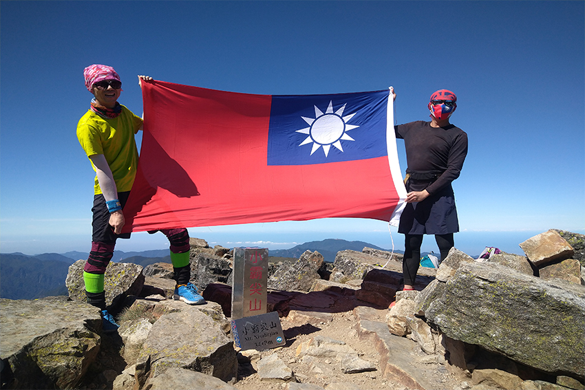
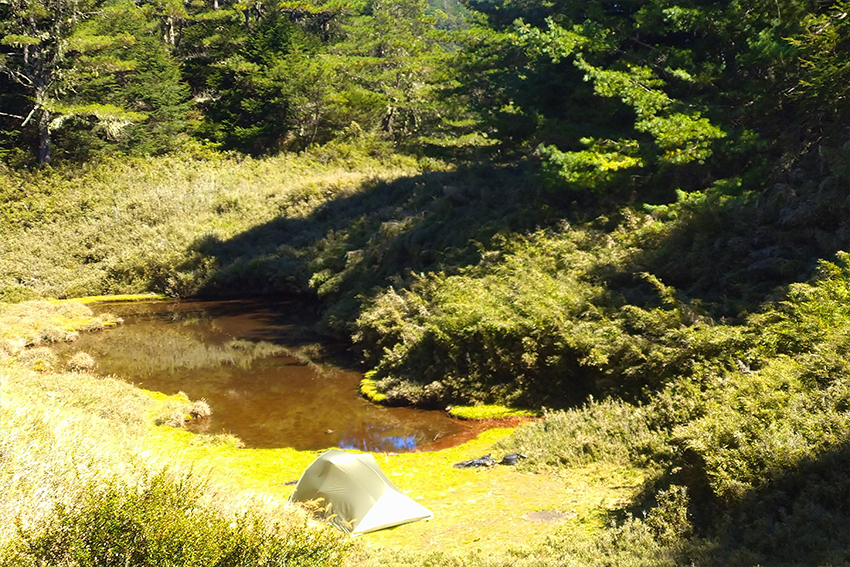
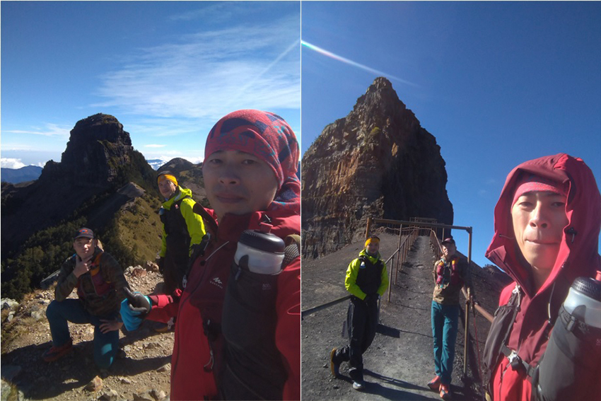
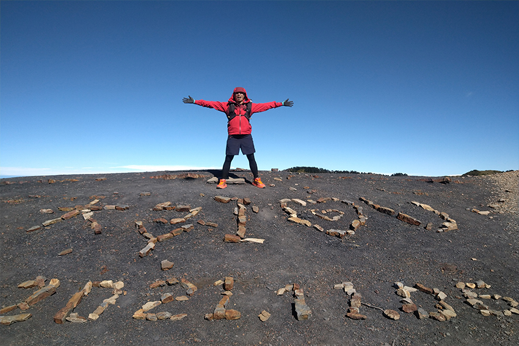

|
“大霸尖山”位於臺灣新竹縣尖石鄉與苗栗縣之間的一座山峰,屬於雪山山脈,也是聖稜線端點之一,因山勢磅礡奇特,而有 “世紀奇峰”之美譽, 自古是泰雅及賽夏族的聖山,連同“小霸尖山”原住民泰雅語稱[Babo Papak]Babo是山意思,Papak是指雙耳朵,以大霸 小霸並峙,形似雙取得名.而賽夏語稱[Kapatalayan]傳說都是這二族祖先發源及發祥之地; 其山形突出,四面懸壁,形狀猶如大酒桶因此又稱[熬酒桶山/酒桶山],然而 “大霸尖山”之名由來是根據清代的山川簡圖中標註考證,同治年間,在同一幅山川簡圖中即出現[熬酒桶山/霸尖山]的名字,地圖各自表述所指的山峰;直至清光緒6年(1880年)出版的<臺灣輿圖並說>中首次出現 “大霸尖山”標註在[熬酒桶山]相應位置而流傳至今,與 “中央尖山”, “逹芬尖山”, 合稱為臺灣三尖. 據雪霸國家公園管理處指出，大霸尖山地質因風化情形日益嚴重，加上山壁容易落石崩落，因此於民國99年(2010)7月23日公告: [基於保護大霸尖山脆弱之地質景觀及維護山友登山安全並保持原住民信仰聖山之完整性,禁止攀登大霸尖山霸頂]，果違反規定登頂，將處以一千五百元的罰款，也呼籲山友們能夠共同配合.
傳統往返行程規劃建議: 大鹿林道來回 親近大霸尖山可由四個地方進去, 最多人從觀霧大鹿林道東線前往九九山莊住宿,隔天一早前往,途中還有 “加利山”, “伊澤山”兩座百岳, 抵達“大霸尖山”霸基底後, 可繼續前往“小霸尖山”往返來回完成後再住九九山莊,可安排3~5天來減緩距離遙遠的17K平緩林道及4K山路. 還是新手時於2017年跟商業團花三天完成,其中林道多處有水源,因此建議也可札營,相對於其它百岳算是安全路線,除了小霸需要拉繩攀爬外,就是林道長了點,還有看過山友使用手拉推車的方式,近期有在討論開放自行車進入,因此可大大降低踢林道的時間 。
| |||||||||||||||||||
| “加利山”途中水池拍攝清晨“大霸尖山3492公尺”及“小霸尖山3418公尺”倒影 | |
|  | |
進階縱走規劃建議: 秀霸線縱走
縱走路線比較辛苦,基本上都需自行揹帳,伙食自理至於走多少天? 住哪? 完全看隊員能力去做安全評估,保守的建議,從武陵山莊出發可順撿 “桃山”輕裝再前往“喀拉業山”,因第一天所揹負最為重,因此可住桃山山屋,但如果要搭帳要注意山屋腹地不大.
第二天比較辛苦因為住新達山屋太近,踢到霸南山屋又太遠,所以中間可以考慮[布秀蘭山營地]或[巴紗拉雲山屋-毀損], 而途中有 “池有山”,“品田山”二座百岳, 而後面還有“布秀蘭山”及 “巴紗拉雲山”二座268岳.
此路線主要風險在於[品田斷崖],正常是安排縱走揹負重裝,手臂力量要有一定訓練強度,來用於抓繩索抵抗地心引力,更安全的做法是人和背包分離,來確保墜落.
| 品田斷崖: 拉繩需要手臂力量配合 | |
|  | |
| 品田斷崖到 “布秀蘭山3438公尺”美景 | |
|  | |
| “布秀蘭山3438公尺”望向大霸/小霸中間隔著“巴紗拉雲山3402公尺” | |
|  | |
單攻規劃建議: 大鹿林道線/ 大霸北稜線
越野跑賽事近幾年越來越盛行,雖然比賽場地很難取得國家公園或經過有百岳的山頭,但高山訓練有助於越野選手心肺增強,因此百岳單攻申請越來越頻繁,大鹿林道寬廣平緩,有一定的距離,又可以前往 “大霸尖山”及 “小霸尖山”吸引不少跑者前往朝聖.
[大鹿林道線]此線總爬升約2618公尺/距離約58公里(耗力指數為:84.18),先直接前往“大霸尖山”,“小霸尖山”回程才走“伊澤山”但切捷徑接回傳統路徑沒有比較快,建議直接原路接回,但“加利山”切捷徑就明顯快很多,只是箭竹高,但不難走.
[大霸北稜線] 此線總爬升約3762公尺/距離約35.51公里(耗力指數為:73.13),此路段困難程度遠遠大於從大鹿林道進去,光爬升就多超過1100公尺,重點是鑽不完的箭竹而且比人還高,因此要從鎮西堡進去,先決條件一定要確保好天氣,來降低行程風險.
另一個重點為此路線遠遠少於傳統路線登山客的前往,因此有些路跡不明,要有基本的看軌跡找路能力(途中有些路段沒布條,路跡亂,小迷路20分),還有要注意的點是去程是爬升,需小心箭竹打臉刺眼(隱形眼鏡有被箭竹打掉) 加上此路線原路來回“伊澤山”,“加利山”不順路,因此未前往.
| 新台幣伍佰元鈔拍攝點,梅花鹿換人… | |||
|  |  | ||
| 雙十節上 “小霸尖山3418公尺”拉國旗 | |
|  | |
| 大霸北稜途中的[馬洋池] | |
|  | |
| 從鎮西堡爬升3500公尺以上,好不容易才上來 | |
|  | |
| 大小霸中間稜線排字 | |
|  | |
行程記錄
2017/04/14~16 傳統行程三日規劃
D1-2017/04/14
08:00 大霸尖山登山服務站(檢查哨)
09:20 大鹿林道東線步道5K
10:40 林道9.8K
12:10 東線瀑布
15:05 林道2K
16:00 九九山莊 (宿)
D2-2017/04/15
03:00 起床
04:00 出發
05:30 加利山岔路口
05:45 加利山
06:30 回岔路口
08:10 伊澤山岔路口
08:35 伊澤山
09:00 回岔路口
09:05 中霸山屋 (休55分)
10:47 大霸基底
11:35 小霸尖山
12:45 回大霸基底
13:30 中霸山屋
14:30 九九山莊 (宿)
D3-2017/04/16
05:00 出發
08:00 大鹿林道19K
11:10大霸尖山登山服務站(檢查哨)
2017/04/14~16 2021/10/10 大小霸單攻 （距離58公里/爬升2618公尺，總時間:14小時20分）
03：00 大霸尖山服務站
05：37 下馬達拉溪便橋
07：03 九九山莊
07：59 加利山叉路
08：44 伊澤山叉路
08：55 中霸山屋
09：24 中霸坪碰到隊友已撿完小霸回程
09：34 大霸尖山
09：58 小霸尖山
10：48 中霸山屋
11：10 伊澤山
11：25 捷運接回 （危險而且沒比較快）
12：07 加利山
12：29 捷徑接回 （路跡明顯快很多 箭竹高）
12：40 九九山莊
12：57 休息後出發
14：09 高繞點
15：41 大鹿林道東支線叉路
17：20 大霸尖山服務站
2021/11/06 大霸北稜單攻（距離35.51公里/爬升3762公尺，總時間：18小時9分）
00：00 鎮西堡停車場
01：42 馬望海山叉路
05：49 南馬洋山叉路
06：21 馬洋池
08：29 中霸坪
08：55 大霸基底
09：27 小霸尖山
10：11 繞到大霸後側
10：39 中霸坪
11：43 隊友取看天池水
12：26 馬洋池
13：07 南馬洋山叉路
13：19 南馬洋山（13：32回叉路）
13：59 第二營地 （隊友未去南馬洋山先下切塔克金溪取水）
15：32 第一營地
16：49 馬望海山叉路
18：09 鎮西堡停車場